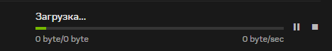

скиньте список того что надо вписать чтобы всё заработало
403 выдает?

блок не со стороны РКН, так что GDPI тут не поможет, блок со стороны самой NVIDIA, возможно чейто косяк просто
 F
F
ну таки да NVIDIA закрыла пользователям из России доступ к обновлениям драйверов видеокарт — СМИ
так можно же скачивать с какого нибудь techpowerup
всегда есть SDI и рутрекер
Как выше и сказали, NVIDIA сама закрыла для россиян обновления драйверов. Первый раз что ли дискриминацию по нац признаку испытываешь?
через NVCleanstall ставится, видимо он с techpowerup тянет драйвера, бтв удобный софт, можно подрезать драйвер и твики некоторые применить
Нет такого списка. Нвидия сама забанила РФ, так что тут только ВПН.
Какая дискриминация? Всё правильно, это коллективная ответственность. Даже тех кто против действия властей.
никакой дискриминации, они все разблокировали
Правильно. И мы жители планеты Земля тоже ответственны за то, что делается здесь, за деятельность человечества.
Уже разбанили, драйвера качаются без проблем как и раньше закрывайте тред.